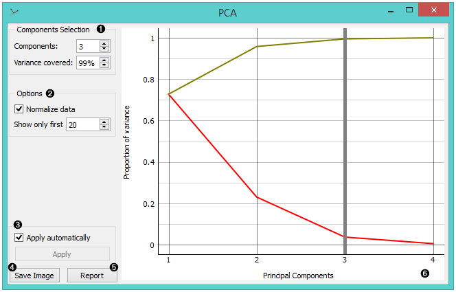
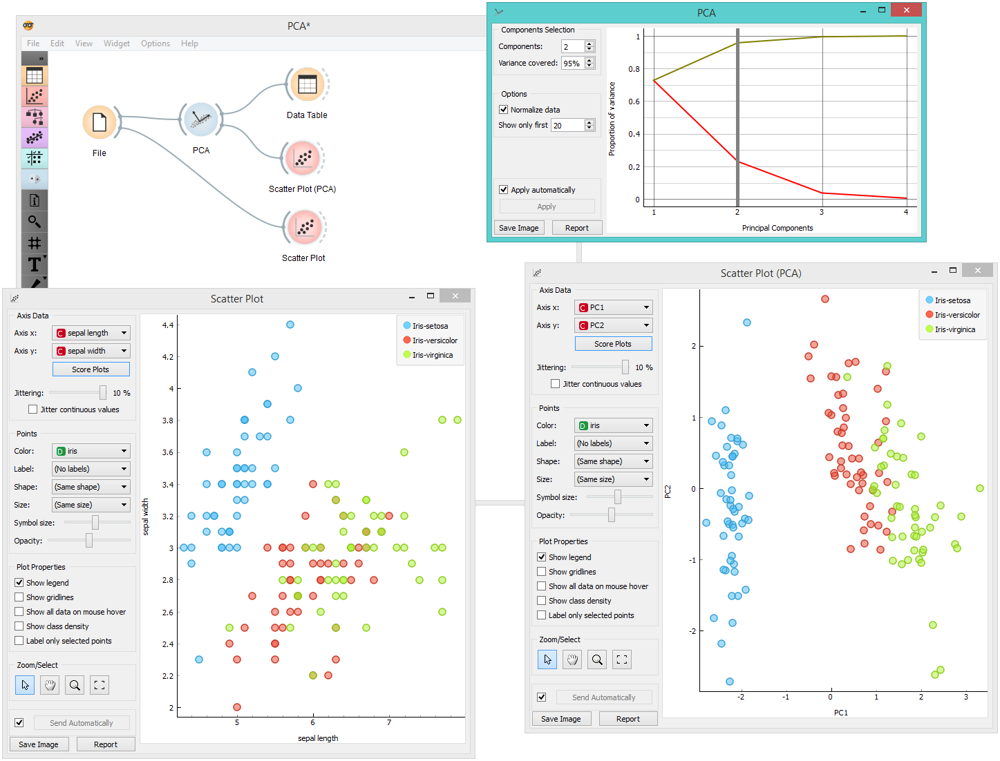
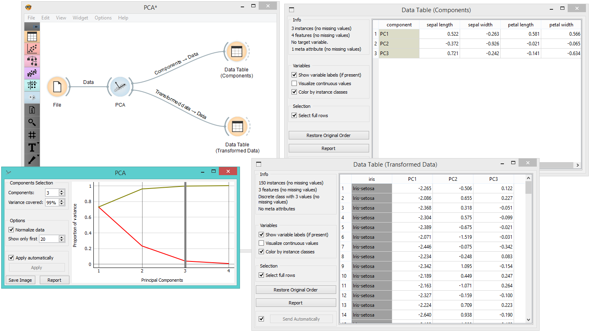

PCA
PCA linear transformation of input data.
Inputs
- Data: input dataset
Outputs
- Transformed Data: PCA transformed data
- Components: Eigenvectors.
Principal Component Analysis (PCA) computes the PCA linear transformation of the input data. It outputs either a transformed dataset with weights of individual instances or weights of principal components.

- Select how many principal components you wish in your output. It is best to choose as few as possible with variance covered as high as possible. You can also set how much variance you wish to cover with your principal components.
- You can normalize data to adjust the values to common scale. If checked, columns are divided by their standard deviations.
- When Apply Automatically is ticked, the widget will automatically communicate all changes. Alternatively, click Apply.
- Press Save Image if you want to save the created image to your computer.
- Produce a report.
- Principal components graph, where the red (lower) line is the variance covered per component and the green (upper) line is cumulative variance covered by components.
The number of components of the transformation can be selected either in the Components Selection input box or by dragging the vertical cutoff line in the graph.
Preprocessing
The widget preprocesses the input data in the following order:
- continuizes categorical variables (with one-hot-encoding)
- imputes missing values with mean values
- if Normalize variables is checked, it divides columns by their standard deviation.
Examples
PCA can be used to simplify visualizations of large datasets. Below, we used the Iris dataset to show how we can improve the visualization of the dataset with PCA. The transformed data in the Scatter Plot show a much clearer distinction between classes than the default settings.

The widget provides two outputs: transformed data and principal components. Transformed data are weights for individual instances in the new coordinate system, while components are the system descriptors (weights for principal components). When fed into the Data Table, we can see both outputs in numerical form. We used two data tables in order to provide a more clean visualization of the workflow, but you can also choose to edit the links in such a way that you display the data in just one data table. You only need to create two links and connect the Transformed data and Components inputs to the Data output.
